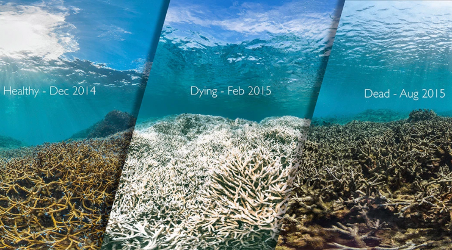

First CO2 from the atmosphere is absorbed by the sruface water of the ocean. That CO2 then reacts with the H2O and forms carbonic acid H2CO3 that breaks into hydrogen ions H+ and bicarbonate ions HCO3. The extra hydrogen ions is what causes the lowering of pH levels in the ocean from its initial average value, 8.1, making it more acidic.
Organisms that create shells are most impacted by ocean acidification such as oysters, shellfish, and corals. Coral skeletons are made up of calcium carbonate CaCO3. Coral polyps create the skeleton by combining calcium ions Ca+2 with carbonate ions Co3-2 in seawater to create the calcium carbonate. However, with a more acidic ocean comes with an abundance of extra H+ ions floating in the water, which also means there are more carbonate ions that bond with hydrodren. This leaves less ions that can be used to make coral skeletons. Coral reefs are huge marine ecosystems with 25% of the oceans fish alone relying on them for things like food and shelter. Other animals like shellfish and oyster also lose their protection. Some fish and other animals like clounfish behavior also change with varying pH affecting their ability to do things like locate predatores and habitat.
Note: the modified values in this graph are not accurate, it is an estimate of what the values are to look like. Despite the modified values being innacurate, it is still important to understand the relationship between pH levels and CO2 levels.
About 33% of CO2 in the atmosphere stems from human activities Fossil Fuels & Industry make up about 89% of carbon emissions Fossil fuels contains oil, coal, and natural gases. Oil makes up 45% of fossil fules, coal make sup 19%, and natural gasses make up 36%. By unchecking the values, we can see the pH levels rise since the CO2 values drop by said percentage.